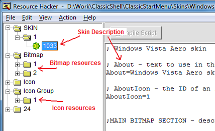
Main_bitmap=1 インデックス 1 のビットマップリソースを使用
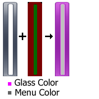
Main_bitmap_mask=2 インデックス 2 のビットマップリソースを使用
Main_bitmap_mask=#FF0000 赤=255、緑=0、青=0 の固定色を使用
Main_bitmap_tint1=#000000 最初のティントカラーは黒
Main_bitmap_tint2=#808080 2 番目のティントカラーはグレー
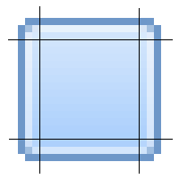
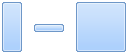
Main_bitmap=1 インデックス 1 のビットマップリソースを使用
Main_bitmap_mask=2 インデックス 2 のビットマップリソースを使用
Main_bitmap_slices_X=6,1,1,6,1,13
Main_bitmap_slices_Y=60,317,8
Main_font="Segoe UI",normal,-10
Main_text_color=#FFFFFF,#FFFFFF,#9F9F9F,#AFAFAF
Main_text_padding=1,0,8,0
Main_icon_padding=4,3,3,3
Main_selection=3
Main_selection_slices_X=4,63,4
Main_selection_slices_Y=4,20,4
Main_arrow_color=#FFFFFF,#FFFFFF
Main_arrow_padding=8,9
Main_split_selection=11
Main_split_selection_slices_X=4,63,4,0,16,4
Main_split_selection_slices_Y=4,20,4
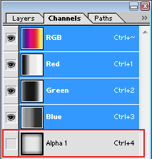
d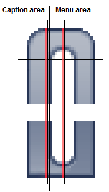
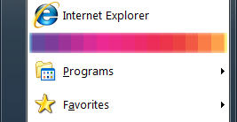
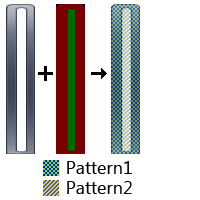
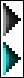
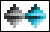
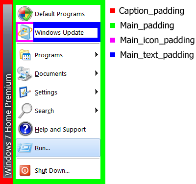
User_bitmap_outside=1 フレームがメインメニューの外に出られるかどうか（ただしスタートメニューが画面下部にある場合のみ）
User_image_padding= -4,8 フレームの上下の余白（フレームの垂直位置を微調整するために使用。水平位置は常に中央揃え）
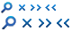
Classic1_options=CAPTION, USER_IMAGE, USER_NAME, CENTER_NAME, SMALL_ICONS
Classic2_options=NO_ICONS, SMALL_ICONS
AllPrograms_options=THICK_BORDER, SOLID_SELECTION
OPTION RADIOGROUP=<name of the group>,0,<option1>|<option2>
OPTION <option1>=<name1>,1
OPTION <option2>=<name2>,0
OPTION RADIOGROUP=Transparency,0,TRANSPARENT_LESS|TRANSPARENT_DEF|TRANSPARENT_MORE
OPTION TRANSPARENT_LESS=Less,0
OPTION TRANSPARENT_DEF=Default,1
OPTION TRANSPARENT_MORE=More,0
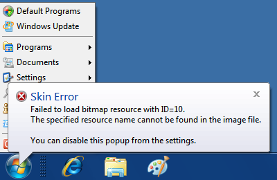
Caption_text_color=#00FF00
Caption_text_color=$StartHighlight
これらは、すべてのバージョンの Windows で利用可能な主要なシステム色です：
Main_font="Segoe UI",normal,-10
アイコンは、スキンファイル内のアイコンリソース番号への参照です：
Main_bitmap=2
Main_bitmap_mask=#FF0000
Main_bitmap_tint1=#E0E000
| 名前 | 型
|
備考
|
| <name>
|
数値または色
|
メイン画像。BITMAP または IMAGE リソース識別子、あるいは #RRGGBB 色にできます |
| <name>_mask | 数値または色
|
カラーマスク。ビットマップリソース識別子または #RRGGBB 色にできます。ビットマップの場合、元のビットマップと同じサイズでなければなりません
|
| <name>_slices_X | 数値
|
水平スライスのサイズ。数値の合計はビットマップの幅を超えてはなりません
|
| <name>_slices_Y | 数値 | 垂直スライスのサイズ。数値の合計はビットマップの高さを超えてはなりません |
| <name>_tint1
|
色
|
最初のティントカラー。マスクの赤チャンネルに従ってメイン画像とブレンドされます。既定ではグラス色です
|
| <name>_tint2 | 色 | 2 番目のティントカラー。マスクの緑チャンネルに従ってメイン画像とブレンドされます。既定ではメニュー背景色です
|
| <name>_tint3 | 色 | 3 番目のティントカラー。マスクの青チャンネルに従ってメイン画像とブレンドされます。既定では黒です |
| 名前 | 型
| 備考
|
| <name>_font
|
フォント
|
項目のテキスト用フォント
|
| <name>_text_color
|
4 色
|
テキストの色 通常、選択、無効、無効+選択
|
| <name>_glow_size
|
数値
|
グローのサイズ（ピクセル単位、Windows 7 でのみサポート） |
| <name>_text_padding
|
4 つの数値（スケール付き） | 項目のテキスト周囲の左、上、右、下の余白
|
| <name>_icon_padding
|
4 つの数値（スケール付き） | アイコン周囲の左、上、右、下の余白 |
| <name>_selection
|
背景または色
|
選択されたときの項目の背景（単色にすることもできます）
|
| <name>_arrow_color
|
2 色
|
矢印の色 通常と選択（矢印が単色の場合）
|
| <name>_arrow
|
ビットマップ
|
矢印ビットマップ（矢印がビットマップの場合）。ビットマップには 2 つの画像が含まれている必要があり、上が通常、下が選択です
|
| <name>_arrow_padding
|
2 つの数値（スケール付き） | 矢印の左側と右側の余白 |
| <name>_icon_frame
|
背景
|
アイコンフレーム用の背景
|
| <name>_icon_frame_offset
|
2 つの数値（スケール付き） | アイコンとフレームの間の水平および垂直の余白 |
| 名前 | 型
|
備考
|
| About
|
テキスト
|
バージョン情報ボックスに表示するテキスト
|
| AboutIcon | アイコン
|
バージョン情報ボックスに表示するアイコン
|
| Version | 数値
|
バージョン 2 を使用
|
| キャプション
|
||
| Caption_font | フォント
|
メインメニューの側面のキャプションで使用するフォント
|
| Caption_text_color | 色
|
キャプションテキストの色
|
| Caption_glow_color | 色
|
キャプションテキストのグローの色
|
| Caption_glow_size | 数値
|
グローのサイズ（ピクセル単位、Windows 7 でのみサポート）
|
| Caption_padding | 4 つの数値（スケール付き） | キャプションテキスト周囲の左、上、右、下の余白
|
| パターン
|
||
| Pattern1 から Pattern4
|
背景
|
メインメニュー用のタイル状画像
|
| Main_emblem1 から Main_emblem10
|
背景
|
メインメニュー用のエンブレム画像
|
| Main_emblem1_padding
|
4 つの数値（スケール付き）
|
エンブレム画像周囲の左、上、右、下の余白
|
| Main_emblem1_alignH
|
文字列 | エンブレムの水平配置 center, center1, center2, left, left1, left2, right, right1, right2, corner
|
| Main_emblem1_alignV
|
文字列
|
エンブレムの垂直配置 center, top, bottom, corner
|
| メインメニュー
|
||
| Main_background | 色
|
メインメニューの背景色
|
| Main_bitmap | 背景
|
メインメニューの背景。6 つの垂直スライスと 3 つの水平スライスが必要
|
| Main_opacity | テキスト | メインメニューの不透明度 solid, region, alpha, glass, fullalpha, fullglass
|
| Main_large_icons | 数値
|
メインメニューで大きいアイコンを使用するには 1 に設定
|
| Main_thin_frame | 数値
|
細い境界線を使用するには 1 に設定（太い 3D 境界線の代わり）。Windows 7 のクラシックテーマにのみ適用
|
| Main_padding | 4 つの数値（スケール付き） | メインメニューの項目周囲の左、上、右、下の余白
|
| Main | スキン項目
|
メインメニューの通常項目の外観
|
| Main_split | スキン項目
|
メインメニューの分割項目の外観。Main から継承 |
| Main_new | スキン項目
|
メインメニューのハイライト項目（新しいプログラムなど）の外観。Main から継承 |
| Main_separator | スキン項目
|
メインメニューの区切り線内のテキストの外観。Main から継承
|
| Main_separator | 背景 | メインメニューの水平区切り線用ビットマップ
|
| Main_separatorV | 背景
|
メインメニューの 2 列間の垂直区切り線
|
| Main_pager | 背景
|
メインメニューページャーの背景。2 つの画像が必要で、上が通常状態、下がハイライト状態
|
| Main_pager_arrows | ビットマップ
|
ページャー用矢印。上、下、通常、ホット状態の 2x2 グリッドが必要
|
| Search_hint_font | フォント
|
検索ボックスのヒントテキスト用フォント
|
| Main_pattern_mask
|
ビットマップ
|
メインメニュー内のパターンの配置を制御するビットマップマスク（Main_bitmap のサイズと一致する必要があります）
|
| Main_emblem_mask
|
ビットマップ
|
メインメニュー内のエンブレムの配置を制御するビットマップマスク（Main_bitmap のサイズと一致する必要があります） |
| 2 列メインメニュー
|
||
| Main2_opacity | テキスト | メインメニューの第 2 列の不透明度
|
| Main_no_icons2 | 数値
|
第 2 列のアイコンを非表示にするには 1 に設定
|
| Main2_padding | 4 つの数値（スケール付き） | 第 2 列の項目周囲の左、上、右、下の余白
|
| Main2 | スキン項目
|
第 2 列の通常項目の外観。Main から継承
|
| Main2_split | スキン項目
|
第 2 列の分割項目の外観。Main2 から継承
|
| Main2_new | スキン項目
|
第 2 列のハイライト項目の外観。Main2 から継承
|
| Main2_separator | 背景
|
第 2 列の水平区切り線。Main_separator から継承 |
| Windows 7 スタイルのメインメニュー
|
||
| Main_bitmap_search | 背景 | 検索モードでのメインメニューの背景
|
| Main_search_padding | 4 つの数値（スケール付き） | 検索モードでのメニュー項目の余白
|
| Main_bitmap_jump | 背景 | ジャンプリストモードでのメインメニューの背景
|
| Main_jump_padding | 4 つの数値（スケール付き） | ジャンプリスト項目の余白
|
| Main_search_indent | 数値（スケール付き） | 検索ヘッダーに対する検索結果のインデント（ピクセル単位）
|
| Main_pattern_search_mask
|
ビットマップ | 検索モードでのメインメニュー用パターンマスク（Main_bitmap_search のサイズと一致する必要があります）
|
| Main_pattern_jump_mask
|
ビットマップ | ジャンプリストモードでのメインメニュー用パターンマスク（Main_bitmap_jump のサイズと一致する必要があります） |
| Main_emblem_search_mask
|
ビットマップ | 検索モードでのメインメニュー用エンブレムマスク（Main_bitmap_search のサイズと一致する必要があります） |
| Main_emblem_jump_mask
|
ビットマップ | ジャンプリストモードでのメインメニュー用エンブレムマスク（Main_bitmap_jump のサイズと一致する必要があります） |
| Shutdown | スキン項目
|
シャットダウンボタンの外観。Main から継承
|
| Shutdown_search | スキン項目
|
検索モードでのシャットダウンボタンの外観。Shutdown から継承
|
| Shutdown_jump | スキン項目
|
ジャンプリストモードでのシャットダウンボタンの外観。Shutdown から継承
|
| Shutdown_padding | 4 つの数値（スケール付き） | シャットダウンボタン周囲の余白
|
| List | スキン項目
|
検索結果とジャンプリスト項目の外観。Main から継承
|
| List_split | スキン項目
|
2 つの部分に分割された検索結果とジャンプリスト項目の外観。List から継承
|
| List_separator | スキン項目
|
検索結果とジャンプリストの区切り線内のテキストの外観。List から継承
|
| List_separator | 背景 | 検索結果とジャンプリスト用の水平区切り線。Main_separator から継承 |
| List_separator_split | スキン項目
|
検索結果の分割区切り線の外観。List_split から継承
|
| List_separator_split | 背景 | 検索結果とジャンプリスト用の水平分割区切り線。Main_separator から継承 |
| Programs_icon | ビットマップ
|
「すべてのプログラム」ボタン用アイコン。2 つの画像が必要で、1 つは通常状態、1 つは選択状態
|
| Programs_button | スキン項目
|
「すべてのプログラム」ボタンの外観。Main から継承
|
| Programs_button_new | スキン項目
|
ハイライトされた「すべてのプログラム」ボタンの外観。Main から継承
|
| Search_bitmap | ビットマップ
|
検索ボックスで使用されるさまざまなアイコンを含むビットマップ
|
| Search_arrow | ビットマップ
|
検索区切り線内の矢印用ビットマップ。2 つの画像が必要で、1 つは最小化状態、1 つは最大化状態
|
| Search_padding | 4 つの数値（スケール付き） | 検索ボックス周囲の余白
|
| Search_frame | 数値
|
検索ボックスの黒いフレームを無効にするには 0 に設定（たとえば Search_background に組み込みの境界線がある場合）
|
| Search_background | 背景
|
検索ボックス周囲の背景
|
| Search_background_padding | 4 つの数値（スケール付き） | 検索背景周囲の余白
|
| Search_background_search | 背景
|
検索モードでの検索ボックス周囲の背景
|
| Search_background_search_padding | 4 つの数値（スケール付き） | 検索モードでの検索背景周囲の余白
|
| Search_background_jump | 背景 | ジャンプリストモードでの検索ボックス周囲の背景 |
| Search_background_jump_padding | 4 つの数値（スケール付き） | ジャンプリストモードでの検索背景周囲の余白 |
| Search_pattern_mask
|
ビットマップ
|
検索ボックス周囲のパターンマスク（Search_background のサイズと一致する必要があります）
|
| Search_pattern_search_mask
|
ビットマップ | 検索モードでの検索ボックス周囲のパターンマスク（Search_background_search のサイズと一致する必要があります） |
| Search_pattern_jump_mask
|
ビットマップ | ジャンプリストモードでの検索ボックス周囲のパターンマスク（Search_background_jump のサイズと一致する必要があります） |
| Search_emblem_mask | ビットマップ | 検索ボックス周囲のエンブレムマスク（Search_background のサイズと一致する必要があります） |
| Search_emblem_search_mask | ビットマップ | 検索モードでの検索ボックス周囲のエンブレムマスク（Search_background_search のサイズと一致する必要があります） |
| Search_emblem_jump_mask | ビットマップ | ジャンプリストモードでの検索ボックス周囲のエンブレムマスク（Search_background_jump のサイズと一致する必要があります） |
| Pin_bitmap | ビットマップ
|
ピン留めおよびピン解除項目用アイコン。ピン留め、ピン解除、通常、選択状態の 2x2 グリッドが必要
|
| More_bitmap | ビットマップ
|
「詳細結果」項目用アイコン。2 つの画像が必要で、1 つは通常、1 つは選択状態
|
| Shutdown_bitmap | ビットマップ
|
インストールする更新プログラムがあるときにシャットダウンボタンに追加されるアイコン
|
| Programs_background | 色
|
プログラムツリーの背景色
|
| Programs | スキン項目
|
プログラムツリー内の項目の外観。Main から継承
|
| Programs_new | スキン項目
|
プログラムツリー内のハイライト項目の外観。Programs から継承
|
| Programs_indent | 数値（スケール付き） | プログラムツリー内のネストされた項目の追加インデント（正または負）
|
| ユーザー画像（クラシックスタイル） | ||
| User_bitmap | ビットマップ
|
ユーザービットマップ用フレーム
|
| User_image_offset | 2 つの数値 | フレーム内のユーザー画像のオフセット |
| User_image_size
|
数値（スケール付き） | ユーザー画像のサイズ
|
| User_image_alpha | 数値 | フレーム内のユーザー画像の 0 から 255 の不透明度
|
| User_frame_position | 2 つの値（スケール付き） | フレームの水平および垂直位置。水平は "center"、"center1"、"center2" にすることもできます |
| ユーザー画像（Windows 7 スタイル）
|
||
| User_bitmap | ビットマップ | ユーザービットマップ用フレーム。64x64 以上でなければなりません |
| User_image_offset | 2 つの数値
|
フレーム内のユーザー画像のオフセット
|
| User_image_size | 数値 | ユーザー画像のサイズ（User_bitmap のサイズ以上である必要があります）。既定は 48 |
| User_image_padding | 2 つの数値（スケール付き） | ユーザーフレーム周囲の上下の余白 |
| User_bitmap_outside | 数値 | ユーザービットマップがメインメニューの外に部分的に表示されるようにするには 1 に設定（メニューが下部にある場合のみ） |
| User_frame_position | 数値（スケール付き） | ユーザーフレームがメインメニュー内に部分的に入る量。既定は 36
|
| ユーザー名（クラシックスタイルのみ）
|
||
| User_name_position | 4 つの数値
|
ユーザー名の位置
|
| User_name_align | 文字列
|
ユーザー名の配置 center, center1, center2, left, left1, left2, right, right1, right2
|
| User_font | フォント
|
ユーザー名用フォント。既定ではこのフォントは DPI とともにスケールされません
|
| User_text_color | 色
|
ユーザー名の色
|
| User_glow_color | 色
|
ユーザー名のグロー色
|
| User_glow_size | 数値
|
グローのサイズ（ピクセル単位、Windows 7 でのみサポート） |
| サブメニュー
|
||
| Submenu_background | 色
|
サブメニューの背景色
|
| Submenu_bitmap | 背景
|
サブメニューの背景画像
|
| Submenu_opacity | テキスト | サブメニューの不透明度
|
| Submenu | スキン項目
|
サブメニュー内の項目の外観
|
| Submenu_split | スキン項目
|
サブメニュー内の分割項目の外観。Submenu から継承
|
| Submenu_new | スキン項目
|
サブメニュー内のハイライト項目の外観。Submenu から継承
|
| Submenu_separator | 背景 | サブメニュー内の区切り線用ビットマップ
|
| Submenu_separator | スキン項目 | サブメニュー内の区切り線内のテキストの外観。Submenu から継承 |
| Submenu_separator_split | 背景 | サブメニュー内の分割区切り線用ビットマップ。Submenu_separator から継承 |
| Submenu_separator_split | スキン項目 | サブメニュー内の分割区切り線項目内のテキストの外観。Submenu_split から継承 |
| Submenu_padding | 4 つの数値（スケール付き） | サブメニュー項目の全辺の余白
|
| Submenu_offset | 数値（スケール付き） | 親メニューに対するサブメニューの追加水平オフセット（正または負）
|
| Submenu_thin_frame | 数値
|
細い境界線を使用するには 1 に設定（太い 3D 境界線の代わり）。Windows 7 のクラシックテーマにのみ適用 |
| Submenu_separatorV | 背景
|
サブメニューの列間の垂直区切り線
|
| Submenu_pager | 背景 | サブメニューページャーの背景。2 つの画像が必要で、上が通常状態、下がハイライト状態 |
| Submenu_pager_arrows | ビットマップ
|
ページャー用矢印。上、下、通常、ホット状態の 2x2 グリッドが必要 |
| AllPrograms_offset | 数値（スケール付き） | すべてのプログラムモードでの最初のサブメニューの追加水平オフセット（正または負） |